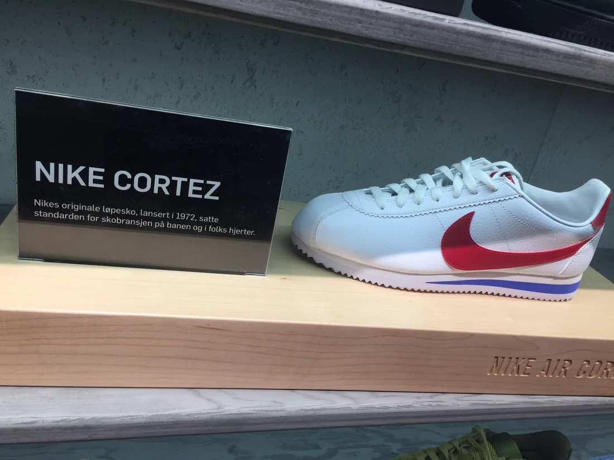
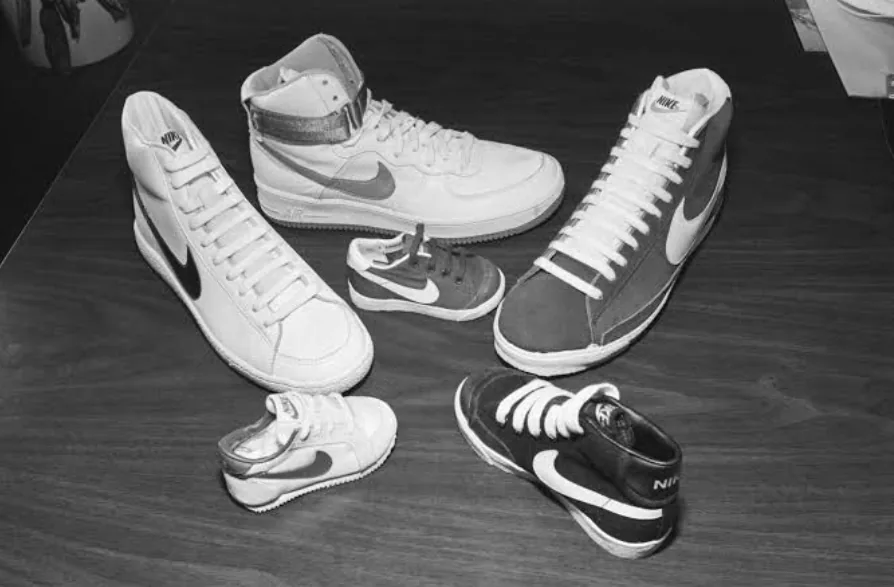
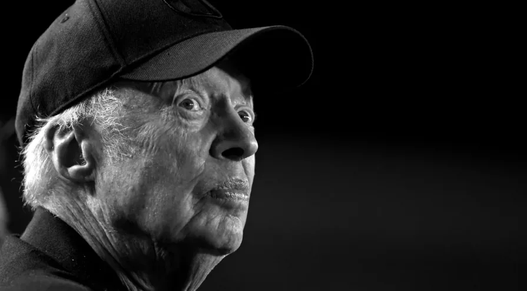
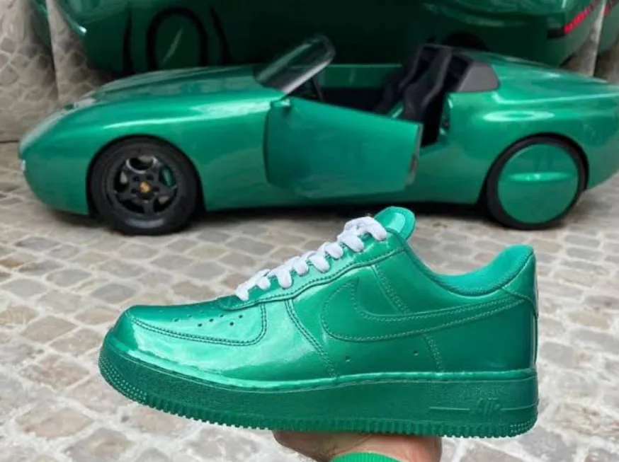
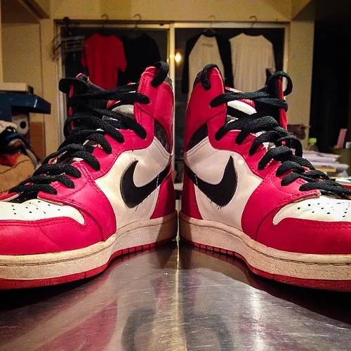
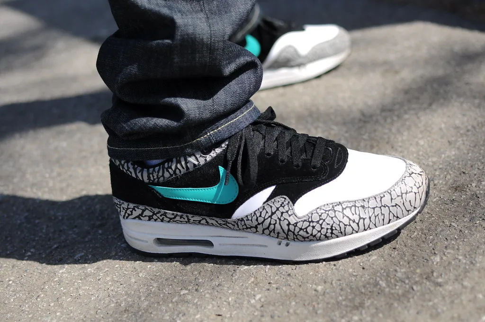
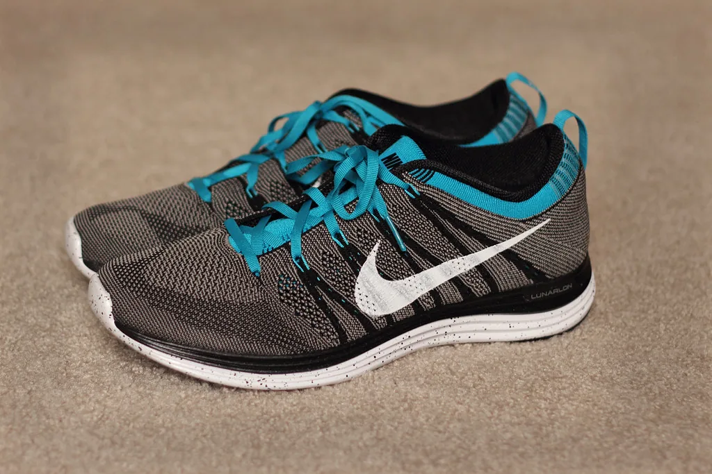

1972
Cortez
El primer modelo diseñado íntegramente por Bowerman marcó el salto de distribuidora a fabricante.
Archivo de marca — desde 1964
La historia de Nike contada a través de su fundador, sus decisiones y los productos que se convirtieron en símbolo.
Desplázate01 — Origen
En 1964, un contable de Oregón y su antiguo entrenador de atletismo apostaron 500 dólares cada uno por una idea sencilla: importar zapatillas japonesas y venderlas desde el maletero de un coche, en las pistas de atletismo universitario. Aquella apuesta se llamó Blue Ribbon Sports. Siete años después tomó el nombre de la diosa griega de la victoria, y un símbolo dibujado por una estudiante de diseño por 35 dólares. Medio siglo más tarde, ese símbolo se convirtió en el lenguaje visual del deporte.


Phil Knight · Cofundador de Nike
02 — El fundador
Cofundador y expresidente de Nike, Inc.
En 1962, siendo estudiante de posgrado en Stanford, Philip Knight escribió un ensayo que planteaba la pregunta que definiría su vida: ¿podían las zapatillas deportivas japonesas hacerle al calzado alemán lo que las cámaras japonesas les habían hecho a las alemanas? Dos años después convirtió esa pregunta en un negocio junto a Bill Bowerman, su entrenador en la Universidad de Oregón. Dirigió la compañía durante más de cuatro décadas, primero como consejero delegado y después como presidente, hasta que en 2016 relató esos años en sus propias palabras en «Shoe Dog», el libro que convirtió su biografía empresarial en un referente del género.
03 — Cronología
1962
Philip Knight plantea en un trabajo de posgrado la pregunta que dará origen a la compañía: ¿pueden las zapatillas japonesas hacerle al calzado alemán lo que las cámaras japonesas les hicieron a las alemanas?
1964
Knight y Bill Bowerman, su entrenador en la Universidad de Oregón, fundan una distribuidora de zapatillas japonesas con 500 dólares cada uno.
1971
La empresa se rebautiza como Nike, en honor a la diosa griega de la victoria. Carolyn Davidson, estudiante de diseño, dibuja el Swoosh por 35 dólares.
1972
El primer modelo con suela diseñada por Bowerman marca la transición de distribuidora a fabricante propia.
1980
Nike empieza a cotizar en la bolsa de Nueva York y acelera su expansión fuera de Estados Unidos.
1984
Un escolta novato de los Chicago Bulls firma un contrato de calzado que cambiará las reglas del patrocinio deportivo.
1985
El primer modelo de la línea Jordan, sancionado en su día por la NBA por el color de su diseño.
1987
La primera zapatilla con la cámara de aire visible a través de una ventana en la suela.
1988
Tres palabras, una campaña publicitaria, y una firma que acompañará a la marca durante las siguientes décadas.
2012
Una técnica de tejido en una sola pieza reduce el número de componentes y el desperdicio de material en la fabricación.
2016
Phil Knight deja la presidencia de la compañía y publica sus memorias sobre los primeros años del negocio.
Hoy
La compañía fija objetivos de reducción de residuos y emisiones de carbono en su cadena de producción.
04 — Iconos de producto

1972
El primer modelo diseñado íntegramente por Bowerman marcó el salto de distribuidora a fabricante.

1982
La primera zapatilla de baloncesto con cámara de aire visible, hoy un básico atemporal fuera de la cancha.

1985
Nacida de un fichaje que la NBA llegó a multar, dio origen a la línea de calzado más rentable del sector.

1987
La ventana de aire en la suela convirtió un componente técnico en un argumento estético propio.

2012
Una sola pieza de tejido sustituye a decenas de piezas cosidas, con menos residuo en la producción.
05 — Legado
1964
Año de fundación, como Blue Ribbon Sports
170+
Países con presencia comercial
79K+
Personas empleadas en todo el mundo
Pagados por el diseño del Swoosh en 1971
De un maletero de coche a un lenguaje visual reconocido en cualquier país del mundo: la historia de Nike es, sobre todo, la historia de una decisión sostenida durante seis décadas.